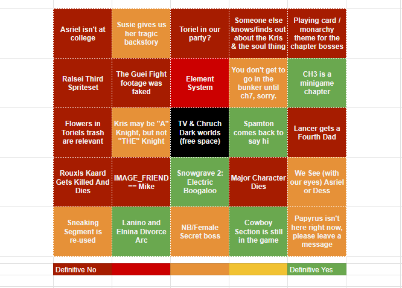
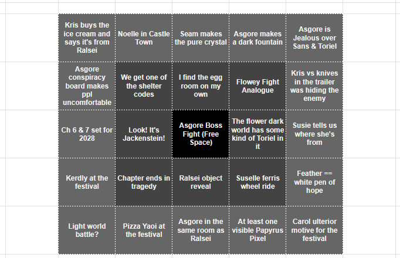

Call it recency bias (I just finished my replay of the game, from ch 1 to ch 4) but it amazes me how perfect DELTARUNE Chapter 4 is. Honestly, everything that happens after you fight the knight at the end of chapter 3 is complete peak. It's a nonstop stretch of perfect atmosphere, extremely clever and heartwarming character building, and amazing music. I think the sound of justice fight is one of my favorite fights in all of video games - and the third sanctuary may be my favorite piece of video game music ever made.
There's so much I'm looking forward to in this new chapter. Will we get to see Susie further develop her healing magic? Will we get to see Ralsei's room in castle town, with the furniture that Kris and Susie scrounged from the sanctuary? (which seems to be one ladder and one pillow?) What the hell is going on with Asgore? Is he gonna create the dark fountain?
(Oh I didn't say it before but this is gonna be a liveblog of DELTARUNE ch5)
Around the time of the Spamton Sweepstakes, I made a bingo board for what I thought would come up in the future chapters. It included such laughable squares as "Sweepstakes lore becomes relevant to the game" and "Chapters 3 - 5 not released in 2022" (that one seems silly in hindsight). Before the chapter released, I revised it into the below board, which I have marked for your viewing pleasure. Looking at it now, there were a few that weren't that big swings, all things considered, but I almost got a bingo. Depending on how you count it, that is.
(I'm especially proud of predicting the Lanino and Elnina Divorce arc, and 'Spamton comes back to say hi' is a very accurate description of what ended up happening.)

The night before those chapters came out, I also wrote a couple hopes and wishes for what I wanted to see. I wished for more characters in the party, which I did not get, but I also hoped for a more serious tone, and that very much came true. I even suggested it would happen in the church, and it did.
I also made a bingo board for the new chapter. I had to struggle a little to fill it out, but here it is:

But how do I think it's all going to go down? Well, we know we'll get to go to castle town, and that there's going to be a dark fountain that we can all but say for sure is in Asgore's flower shop. We also know that the festival is happening, and we'll get to walk around with Susie and Noelle. So if I had to guess, things will go down thusly:
Kris will wake up, not immediately following concequences of Susie outside of Kris's window last night. I'm not sure if there'll be an interlude before the festival (maybe the castle town segment is before the festival, or maybe it's available to visit during exploration of the festival). Possibly as the festival is winding down, Susie decides that since the tree code for the shelter is a bust, they should go ask asgore about the police one, cue dark world. I'm thinking the knight might also be there? (could be interesting to see the knight and Asgore interacting). At the end, something disasterous will happen (either The Roaring, or Susie figuring out about Kris's ties to the conspiracy) that means things will be super serious from here. Then (this is my personal prediciton) we get a 'to be continued in Chapter 6 and Chapter 7: 2028'. Why do I think this might be the case? Well it's not based on any evidence, just the idea that having two chapters drop for the big finale would be cool, and that 2028 is the 10th anniversary of Chapter 1, and therefore DELTARUNE itself. Could be neat.
There's also the going theory that there will be no Chapter 7 at all, stemming from Gerson's "After that, there was only one more chapter. The pen was lying there for the youth to write the next page, they never did". Now this could be alluding to a couple things. It could be pointing at Susie, the 'White Pen of Hope', and asking her to forge a new future aside from the prophecy with her powers of hope and nonconformity. If we're taking that line strictly metatextually, it could read as 'DELTARUNE will have 6 chapters, then end, what happens next is up for you to decide.' But that's kind of getting ahead of things.